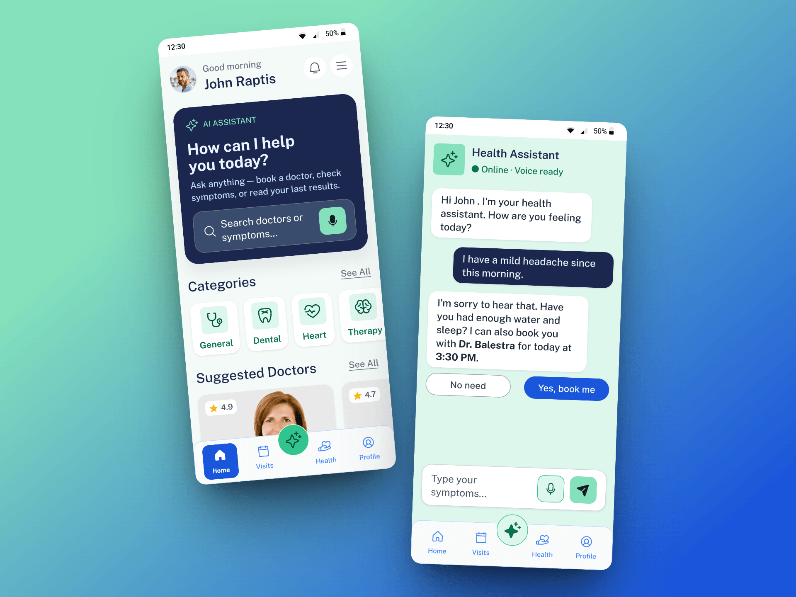

ШІ-платформа для мобільного UX (відкриється в новій вкладці)
Створював зрозумілі ШІ-фічі, стандартизував внутрішні бібліотеки асетів і розробляв адаптивні набори компонентів для швидкого продуктового спринту.
-24% часу на задачу
Понад 7 років досвіду в UI/UX
Проєктую естетичні, доступні та зрозумілі веб-сайти й мобільні додатки. 7+ років у UI/UX та інженерний досвід.
Від банківського фінтеху до ШІ-продуктових спринтів — інтерфейси на основі реальної поведінки користувачів, дизайн-системи та готова передача розробникам.

Обрані роботи
Шість екосистем, перетворення від ескізних ідей до чітких, високоефективних цифрових інтерфейсів.

Створював зрозумілі ШІ-фічі, стандартизував внутрішні бібліотеки асетів і розробляв адаптивні набори компонентів для швидкого продуктового спринту.

Створив інтуїтивно зрозумілий застосунок для відстеження показників здоров’я з безперешкодними сценаріями взаємодії, чіткою візуальною ієрархією та інтерактивним прототипом.

Редизайн навігації кошика, оплати й багатосценарного онбордингу, щоб зберегти довіру саме в момент найбільшого ризику відтоку.

Система з великою щільністю даних: рольові флоу для адмінів і користувачів, інтерактивні таблиці та аналітичні дашборди для щоденної роботи операторів.

Повний веб-дизайн з інтерактивним профілюванням смаку, навігацією каталогом і чекаутом, орієнтованим на конверсію – розроблявся й ітерувався самостійно.

Концептуальний проєкт дослідження та візуальної адаптації українського фольклору та демонології у всесвіті фентезі ігор Відьмак.
ГОЛОВНЕ
Львів, Україна · Віддалено по всьому світу
Досягнення
Підтверджені результати реалізованих продуктів.
Час на задачу, ШІ мобільний UX (Glorium Tech)
До проєкту →
Відтік на чекауті, iOS Фудтех платформа
До проєкту →
Швидкість обробки, редизайн логістичної CRM
До проєкту →років
Продуктовий UX, 10+ років у дизайн-індустрії загалом
Інфо про мене →Підхід
Диплом із системної інженерії Дніпровського політехнічного університету означає, що я не просто малюю інтерфейси, а я мислю обмеженнями, станами та передачі даних. Цей бекграунд визначає три речі в кожному проєкті:
Оберіть крок, щоб побачити, як дослідження перетворюється на доступний інтерфейс у продакшені.
Дослідження користувачів і мапи шляху, щоб зрозуміти, для кого продукт і де виникають труднощі.
Інформаційна архітектура, юзер-флоу та вайрфрейми, що роблять логіку продукту зрозумілою до будь-якого візуального полірування.
Масштабовані дизайн-системи, бібліотеки компонентів і токени, що відповідають тому, що реально будують інженери.
Флоу, вайрфрейми та інтерактивні прототипи для швидкої перевірки гіпотез.
Специфікації та дизайн-токени, що безпосередньо відповідають тому, що будують інженери, і скорочують час розробки.
WCAG 2.2 перевіряється на кожному кроці — колір, контраст і флоу, а не аудит наприкінці.
Інженерні принципи в кожному проєкті
Специфікації та дизайн-токени, які безпосередньо відповідають тому, що фактично створюють інженери, що скорочує час розробки.
Дизайн-рішення одразу звіряються з реальними обмеженнями платформи та продуктивності.
Доступність – це стартова вимога, а не аудит в кінці: колір, контраст і флоу перевіряються одразу в процесі.
Лендінги та сайти – від логічної структури до готового UI, оформленого для верстки.
Покращення інтерфейсів на основі реальних дій користувачів і бізнес-цілей.
Швидкі аудити, які виявляють слабкі місця та конверсійні діри ще до втрати клієнтів.
Флоу, вайрфрейми та прототипи – від чистого аркуша до готового продукту.
Навички та експертиза
Спеціаліст із системної інженерії – Дніпровський політехнічний університет. Комп'ютерна інженерія, системна архітектура та візуалізація.
Спец. курси по UI/UX дизайну
Про мене
Шлях від банківського Фінтех до ШІ-продуктових спринтів, з тривалою незалежною практикою паралельно.
Читати повну історію →Jun 2025 – Aug 2025
ШІ-продуктовий спринт. Створював зрозумілі ШІ-фічі, стандартизував бібліотеки асетів, розробляв адаптивні набори компонентів.
Apr 2021 – Apr 2022
iOS-застосунок доставки їжі. Редизайн кошика, чекауту та онбордингу
May 2014 – Present
Довгострокові проєкти, включно з e-commerce платформою для вина та CRM для логістики й трекінгу посилок.
Jan 2013 – Apr 2014
Фінтех інтернет- та мобільний банкінг, B2B/B2C, з фокусом на податкові та інвойсингові процеси для МСБ.
Послуги
Фокусована 45-хвилинна сесія: вирішимо конкретну UX-проблему, прокачаємо портфоліо, підготуємося до співбесіди або розберемо ваш проект.
Практичний аналіз інтерфейсу: знаходимо точки тертя, де губляться клієнти, та даємо чіткий крок-за-кроком план дій.
Індивідуальний сайт з нуля: зручна UX-ієрархія, сучасний візуал та адаптивний інтерфейс, повністю готовий до верстки.
Контакти
Допоможу спроектувати та масштабувати вашу Фінтех, ШІ або SaaS екосистему.